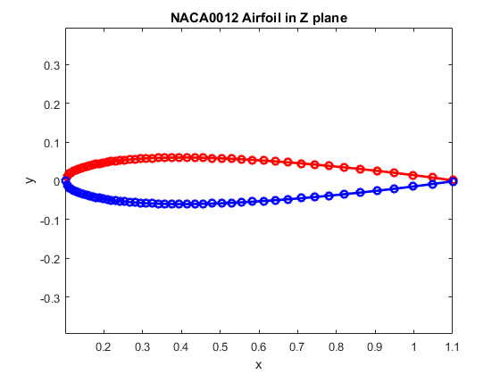
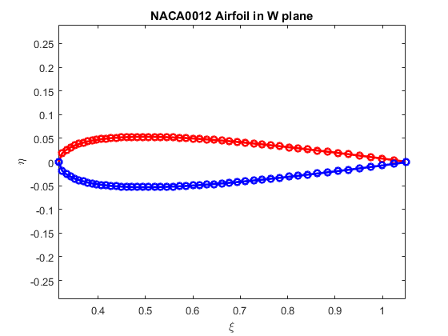
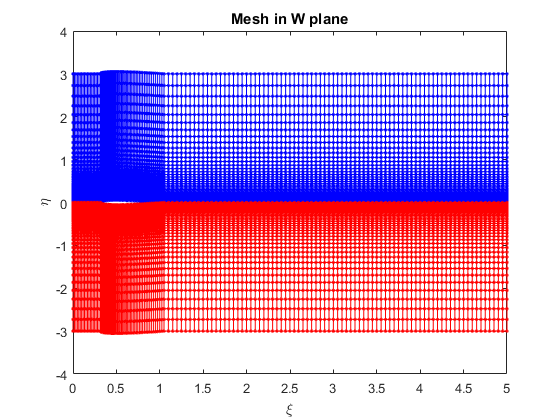
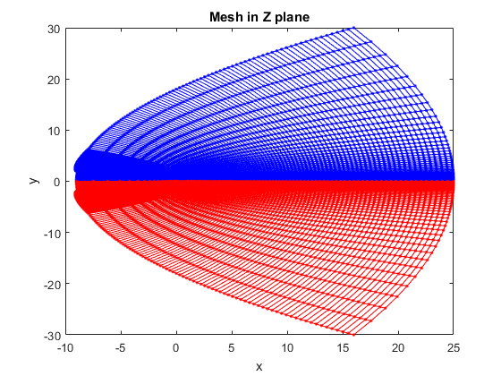

Contents
%%%%%%%%%%%%%%%%%%%%%%%%%%%%%%%%%%%%%%%%%%%%%%%%%%%%%%%%%%%%%%%%%%%%%%%%%%% %%%%%% Program name: NACA0012CMesh.n %%%%%% Program Aurthor: Yang Yang %%%%%% Date: 2015.09.23 %%%%%% Version 1.0 %%%%%%%%%%%%%%%%%%%%%%%%%%%%%%%%%%%%%%%%%%%%%%%%%%%%%%%%%%%%%%%%%%%%%%%%%%%
Geometry parameters
x0 = 0.1; % First points for airfoil
Mesh parameters
N_xi = 150; % Mesh number in xi direction N_eta = 100; % Mesh number in eta direction N_eps = 20; % Mesh number before Airfoil N = 50; % Mesh number in Airfoil xi_max = 5; % maximun xi eta_max = 3; % maximun eta
Plot Airfoil in Z plane and W plane
x_span = [x0, x0+1]; % Airfoil span x = meshfun1( x_span, N ); % generate nodes' x y = NACA0012( x , x0); % generate nodes' y z = x + sqrt(-1)*y; w = sqrt(z); % conformal mapping xi = real(w); % separate xi eta = imag(w); % separate eta % plot airfoil in Z plane figure('Color',[1 1 1]); plot(x,y,'r-o','linewidth',2); hold on; plot(x,-y,'b-o','linewidth',2); title('NACA0012 Airfoil in Z plane'); xlabel('x'); ylabel('y'); axis equal; % plot airfoil in W plane figure('Color',[1 1 1]); plot(xi,eta,'r-o','linewidth',2); hold on; plot(xi,-eta,'b-o','linewidth',2); title('NACA0012 Airfoil in W plane'); xlabel('\xi'); ylabel('\eta'); axis equal; 
Generate Mesh
mesh_xi = zeros(N_xi,N_eta); % Array to store mesh nodes' xi mesh_eta = zeros(N_xi,N_eta); % Array to store mesh nodes' eta % generate first xi edge xi_before = linspace(0,min(xi),N_eps); xi_behind = linspace(max(xi),xi_max, (N_xi - N_eps - N)); xi_edge_mesh_xi = [xi_before, xi, xi_behind]; xi_edge_mesh_eta = [zeros(1,length(xi_before)), eta, zeros(1,length(xi_behind))]; % generate delta in eta edge eta_span = [0, eta_max]; [eta_edge_mesh_eta,delta_eta] = meshfun2( eta_span, N_eta ); % generate mesh mesh_xi(:,1) = xi_edge_mesh_xi; mesh_eta(:,1) = xi_edge_mesh_eta; for j = 2:N_eta for i = 1:N_xi mesh_xi(i,j) = mesh_xi(i,j-1); mesh_eta(i,j) = mesh_eta(i,j-1) + delta_eta(j-1); end end % Confromal Mapping W = mesh_xi + sqrt(-1)*mesh_eta; Z = W.^2; X = real(Z); Y = imag(Z);
Plot Mesh in MATLAB
plot mesh in W plane
figure('Color',[1 1 1]); for j = 1:N_eta for i = 1:N_xi - 1 plot([mesh_xi(i,j),mesh_xi(i+1,j)],[mesh_eta(i,j),mesh_eta(i+1,j)],'b.-'); hold on; end end for j = 1:N_eta for i = 1:N_xi - 1 plot([mesh_xi(i,j),mesh_xi(i+1,j)],[-mesh_eta(i,j),-mesh_eta(i+1,j)],'r.-'); hold on; end end for i = 1:N_xi for j = 1:N_eta - 1 plot([mesh_xi(i,j),mesh_xi(i,j+1)],[mesh_eta(i,j),mesh_eta(i,j+1)],'b.-'); hold on; end end for i = 1:N_xi for j = 1:N_eta - 1 plot([mesh_xi(i,j),mesh_xi(i,j+1)],[-mesh_eta(i,j),-mesh_eta(i,j+1)],'r.-'); hold on; end end hold off; title('Mesh in W plane'); xlabel('\xi'); ylabel('\eta'); % plot mesh in Z plane figure('Color',[1 1 1]); for i = 1:N_xi for j = 1:N_eta - 1 plot([X(i,j),X(i,j+1)],[Y(i,j),Y(i,j+1)],'b.-'); hold on; end end for j = 1:N_eta for i = 1:N_xi - 1 plot([X(i,j),X(i+1,j)],[Y(i,j),Y(i+1,j)],'b.-'); hold on; end end for i = 1:N_xi for j = 1:N_eta - 1 plot([X(i,j),X(i,j+1)],[-Y(i,j),-Y(i,j+1)],'r.-'); hold on; end end for j = 1:N_eta for i = 1:N_xi - 1 plot([X(i,j),X(i+1,j)],[-Y(i,j),-Y(i+1,j)],'r.-'); hold on; end end hold off; title('Mesh in Z plane'); xlabel('x'); ylabel('y'); 
Output Mesh in tecplot file format
fp = fopen('NACA0012CMesh.dat','w'); fprintf(fp,'TITLE = NACA0012\n'); fprintf(fp,'VARIABLES = "X", "Y"\n'); fprintf(fp,'ZONE I =%d, J =%d,F = point\n',N_xi,N_eta); for j = 1:N_eta for i = 1:N_xi fprintf(fp,'%e, %e\n',X(i,j),Y(i,j)); end end fclose(fp);